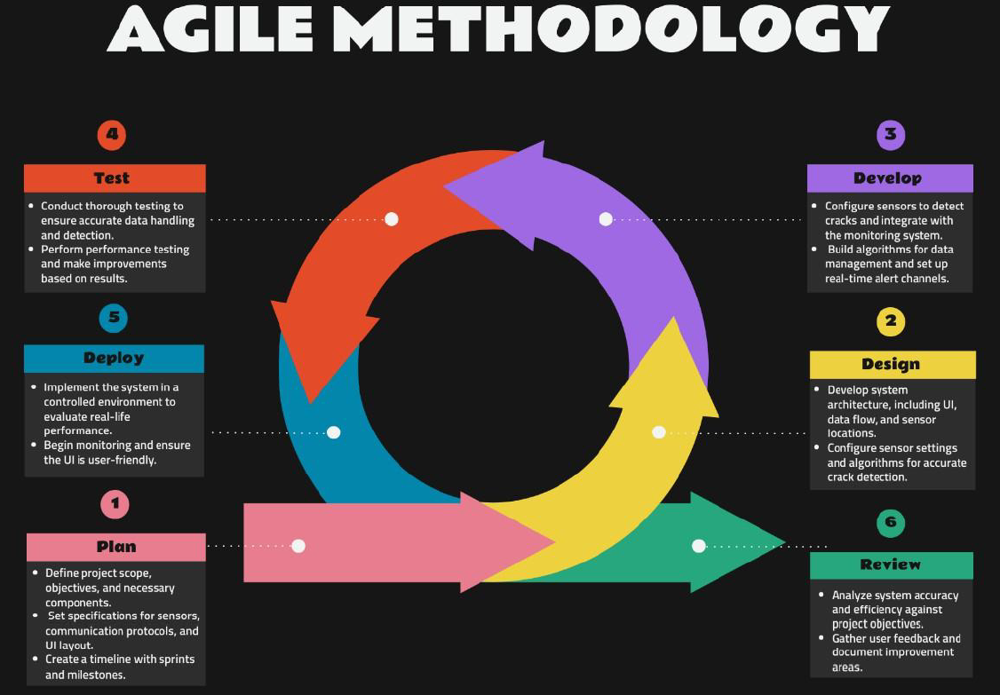

A smart system that uses sensors and IoT technology to detect structural cracks in real time and enable remote monitoring for early damage detection and prevention.
View LiveThis project develops an Internet of Things (IoT)-based crack detection and monitoring system for buildings. Wireless sensors are installed at critical points to detect structural cracks and send data to a cloud platform. The system provides real-time monitoring and alert notifications, improving safety and reducing maintenance costs.
The project uses Agile methodology, which includes six iterative phases: Planning, Design, Development, Testing, Deployment, and Review. This ensures flexibility and continuous improvement of the IoT monitoring system.

By enabling continuous, real-time monitoring, this system reduces dependency on manual inspections and human error. It enhances safety for occupants, minimizes maintenance costs, and allows data-driven decision-making for infrastructure management.